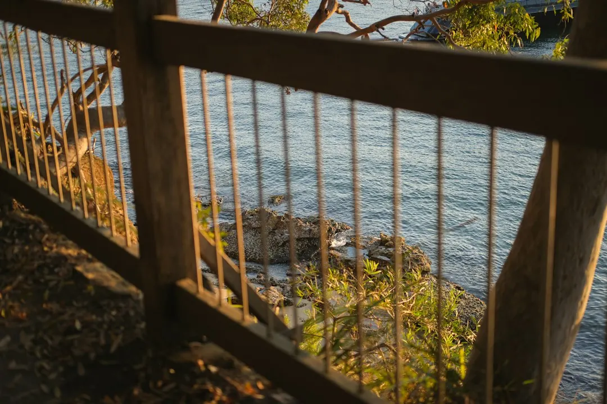

For homeowners comparing retaining wall services sydney options, the practical decision is how the wall will manage ground, water, load and approval requirements on the particular block.
Retaining Wall Services Sydney Explained
Retaining Walls Sydney describes the first assessment as a site question rather than a product choice. A sloping block, an ageing sleeper wall and a driveway needing structural support can require different solutions, even when the visible height appears similar. Before requesting prices, record the approximate height to be retained, the wall length, whether the structure sits on a boundary, and whether a driveway or other surcharge is nearby.
Sydney ground conditions can change across a short distance. The published guide distinguishes sandstone ridges around the north shore and Northern Beaches from shale-clay areas through the inner west and western suburbs, and sandy bayside pockets around Botany Bay. Those conditions affect excavation, founding, drainage and the choice between systems such as concrete sleepers, sandstone blocks or core-filled besser blocks.
- Measure the retained height and wall length.
- Note nearby buildings, driveways, boundaries and existing walls.
- Describe visible movement, cracking, bulging or water flow.
- Identify whether the project is a garden terrace, boundary wall or structural support.
Match the material to the project
Material selection involves more than colour. Concrete sleeper walls use steel-reinforced sleepers between galvanised posts and are presented as a durable option for sloping and split-level blocks. Timber sleeper walls suit gardens, terraces and low boundary retaining, while besser block construction provides a core-filled, steel-reinforced option for taller engineered retaining and rendered finishes.
Sandstone blocks and boulders can suit Sydney sandstone country, particularly where a rugged, free-draining appearance is wanted. Gabion walls use rock-filled wire baskets and are described as suitable for sloping and erosion-prone sites. A useful comparison should show the proposed material, wall height, length, footing or post approach, finish, drainage work and any engineering requirement.
| Option | Useful fit | Quote question |
|---|---|---|
| Concrete sleepers | Sloping or split-level blocks | How are posts and sleepers sized for this site? |
| Timber sleepers | Gardens, terraces and low boundaries | What condition and replacement plan applies? |
| Besser blocks | Taller engineered or rendered walls | Is core filling and reinforcement included? |
| Sandstone, boulders or gabions | Natural or free-draining finishes | How will founding and drainage be handled? |
Treat drainage as part of the wall
Water management should be visible in the scope, not left as an assumption. The published service description refers to ag-drain, gravel and geofabric behind the wall, with connection to the site stormwater system. It identifies drainage as especially important on shale-clay ground, where movement can challenge a poorly drained structure.
Ask the contractor to mark the drainage route on the quote and explain where discharge goes. Confirm whether excavation, drainage aggregate, geofabric, connection work and reinstatement are included. If an existing wall is bulging, cracked or failing, record where water appears after rain and whether soil is pressing against the structure. These observations help determine whether assessment, partial repair or full replacement is appropriate.
Check the approval pathway before work
The guide says a retaining wall may be exempt development under the Codes SEPP when it is 600mm or less and also satisfies other exempt-development standards. Those conditions include boundary setback, separation from other walls, drainage connection, distance from waterbodies and heritage constraints. Height alone therefore does not settle the approval question.
A wall above the stated exempt threshold, or a wall carrying a surcharge, is described as requiring design to AS 4678 by a structural or geotechnical engineer. Depending on the circumstances, approval may proceed through complying development or a council development application. Ask who is responsible for checking the pathway, preparing engineering documents and confirming any council requirements before construction begins.
Who this guide applies to
This guide is for Sydney homeowners, landlords and property managers assessing a new wall, replacement or repair on a sloping, split-level or cut-and-fill block. It is also relevant when a driveway, boundary, terrace or existing structure changes the load or access conditions.
It is particularly useful for people comparing a timber sleeper replacement with concrete sleepers, considering sandstone or gabions for a landscape result, or deciding whether a taller wall needs engineering. For a broader discussion of wall types, the retaining walls Sydney overview can be read alongside this site-planning checklist.
Before seeking a quote, collect photographs, approximate measurements, the suburb or postcode, drainage observations and any information about boundaries, heritage constraints or nearby water. Those details give a contractor a clearer basis for discussing construction, compliance and cost.
- Measure the site. Record approximate retained height, wall length, boundary position and nearby driveways or structures.
- Describe the ground. Note sandstone, shale-clay or sandy conditions where known, plus visible movement, cracking and water flow.
- Compare systems. Ask for material, reinforcement, drainage, finish and maintenance details in the same written scope.
- Confirm compliance. Check whether the wall is exempt or needs engineering, a complying development certificate or a development application.
- Review the quote. Make sure excavation, drainage, stormwater connection, engineering and reinstatement responsibilities are clear.
| Project signal | What to clarify | Likely next question |
|---|---|---|
| Low garden or boundary wall | Height, length and boundary position | Does the project meet every exempt condition? |
| Wall near a driveway | Surcharge and ground support | Is engineering to AS 4678 required? |
| Old, bulging or cracked wall | Cause of movement and water path | Is repair practical or is replacement needed? |
| Sandstone, shale-clay or sandy ground | Excavation and founding conditions | Which system suits the ground and drainage? |
This guide covers Sydney retaining wall selection, drainage, site assessment, approval questions, repairs and quote preparation.